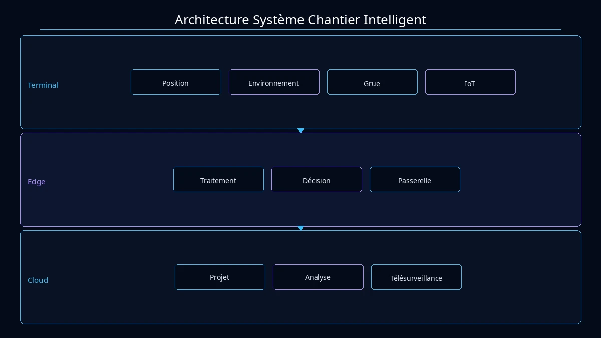
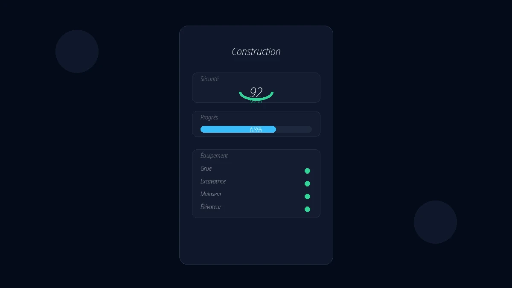
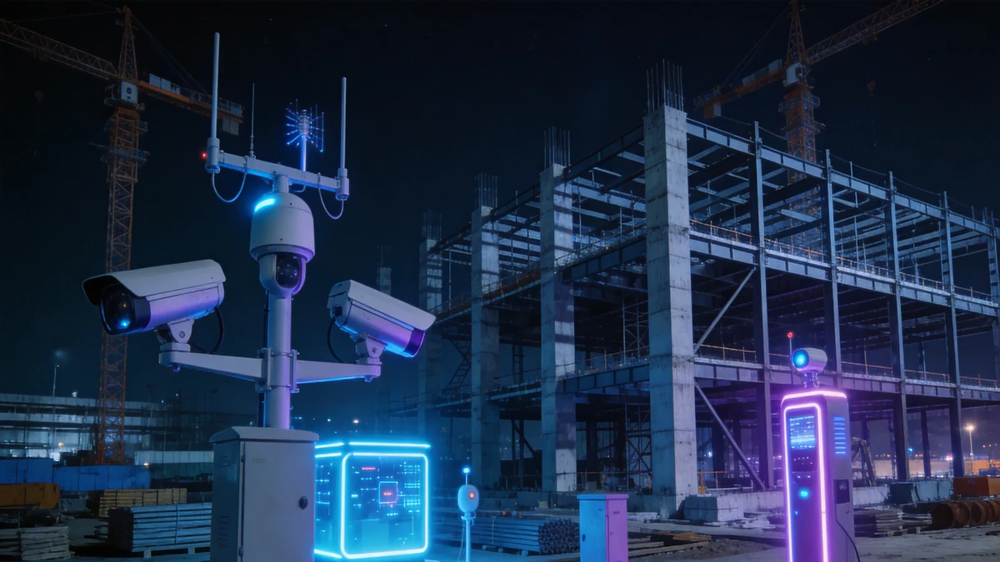

Architecture Système

Architecture métier chantier intelligent
La solution chantier intelligent adopte une architecture trois niveaux « Cloud-Edge-End » : la couche end déploie des dispositifs de détection IoT tels que positionnement du personnel, surveillance environnementale et monitoring de grue à tour ; la couche edge effectue le traitement de données en temps réel et la prise de décision locale ; la plateforme cloud fournit une gestion de projet unifiée, l'analyse de données et la supervision à distance, supportant la gestion simultanée de plusieurs projets.
Composition de la Solution
Pointage nominatif, système de réalité du travail, supervision de paie et positionnement du personnel.
Vidéosurveillance IA (reconnaissance casque/gilet réfléchissant), monitoring grue à tour, monitoring de fondation profonde et monitoring de coffrage haut.
Inspection qualité, acceptation d'ouvrages cachés, inspection entrée matériaux et boucle fermée des problèmes qualité.
Simulation d'avancement BIM, alerte précoce jalons, statistiques de rendement et analyse de planning.
Enregistrement entrée matériaux, gestion des stocks, statistiques de consommation et évaluation fournisseurs.
Surveillance poussière, surveillance bruit, surveillance eau/électricité et contrôle de liaison pulvérisation.
Modules Principaux
Présence en vrai nom, système de vrai nom de la main-d'œuvre, supervision des salaires, positionnement du personnel.
Surveillance vidéo IA (reconnaissance du casque de sécurité/gilet réfléchissant), surveillance de la grue à tour, surveillance des fondations profondes, surveillance du coffrage haut.
Inspection qualité, acceptation des travaux cachés, inspection des matériaux entrants, boucle fermée des problèmes de qualité.
Simulation BIM de l'avancement, alerte des jalons, statistiques de la valeur produite, analyse de la durée.
Enregistrement des entrées de matériaux, gestion des stocks, statistiques de consommation, évaluation des fournisseurs.
Surveillance des poussières, surveillance du bruit, surveillance de l'eau et de l'électricité, contrôle couplé des pulvérisations.
Architecture d'Application

Architecture applicative chantier intelligent
Le système supporte plusieurs terminaux incluant mini-programme WeChat, Web PC, tableau de bord TV, APP et H5, répondant aux besoins des différents rôles. Les chefs de projet peuvent visualiser les données globales via PC, les superviseurs peuvent utiliser l'APP mobile pour l'inspection sur site, et la direction peut surveiller la dynamique du projet en temps réel via le tableau de bord TV.
Accès Multi-Terminal
Le système supporte l'accès multi-terminal incluant le Mini Programme WeChat, PC Web, Tableau de Bord TV, APP et H5, répondant aux besoins d'utilisation de différents rôles. Les chefs de projet peuvent consulter les données globales via PC, les superviseurs peuvent effectuer des inspections sur site via l'APP mobile, et la direction peut maîtriser la dynamique du projet en temps réel via les tableaux de bord TV.
Scénarios d'Application

Scénarios chantier intelligent
Contrôle sécurité et qualité pour la construction de résidences hautes et complexes commerciaux.
Surveillance environnementale et gestion de l'avancement pour les projets de routes, ponts et canalisations.
Surveillance sécurité fondation profonde et coffrage haut pour la construction de stations de métro et tunnels.
Surveillance installation structure métallique et gestion sécurité du personnel pour la construction de grandes usines.
Avantages de la Solution
Le système a remporté le Premier Prix du Prix Scientifique et Technologique du ministère chinois du Logement et du Développement urbain-rural, avec des droits de propriété intellectuelle indépendants complets. La précision de l'analyse visuelle IA atteint des niveaux leaders de l'industrie, et la collaboration multi-terminaux couvre tous les rôles de projet, réalisant véritablement « une plateforme gère le chantier ».
Valeur de la Solution
Par des moyens numériques, les taux d'incidents de sécurité sont réduits de plus de 40%, les retards de planning de 25%, et le gaspillage de matériaux de 15%. Les décisions de gestion basées sur des données en temps réel remplacent les approches basées sur l'expérience, créant une valeur économique et sociale significative pour les projets d'ingénierie.
Pratique Projet
Le système de gestion de chantier intelligent FIRS de Lagos est un projet de référence déployé à l'international par l'entreprise, couvrant six dimensions de gestion : personnel, sécurité, qualité, planning, matériaux et environnement. Il a remporté le Premier Prix du Prix Scientifique et Technologique du MOHURD, validant pleinement l'applicabilité de la solution dans des environnements d'ingénierie complexes.
Réalisations du Projet
Le Système de Gestion de Chantier Intelligent du FIRS de Lagos a remporté le Premier Prix du Prix Scientifique et Technologique du Ministère du Logement et du Développement Urbain de Chine, démontrant pleinement l'expertise professionnelle de l'entreprise dans l'intelligence du bâtiment et les grands projets d'ingénierie.